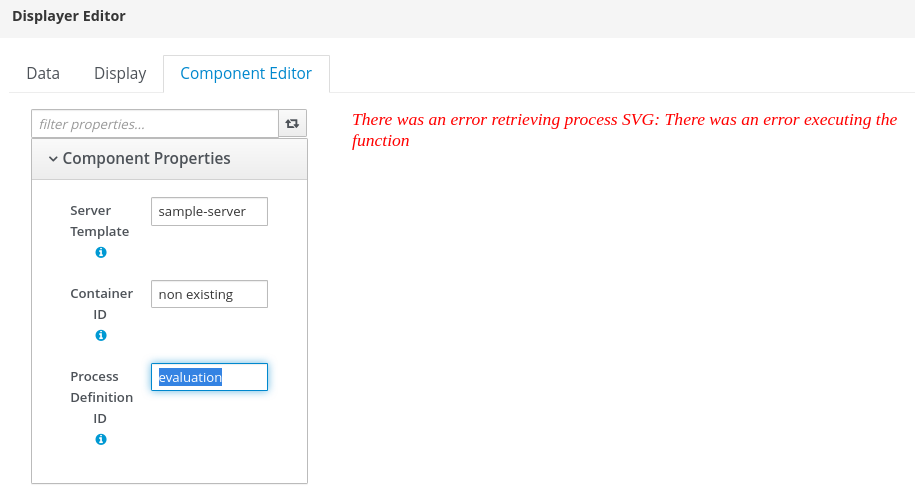

Heatmap Component for Business Central and jBPM
For a long time, Business Central has Dashboards capabilities to build reports from process execution data. Recently with the addition of external components, it is also possible to create any visual representation for the dataset coming from Business Central.
In this post, we will discuss a new category of visual components added in jBPM 7.48.0 Final: heatmaps.
Heatmaps Components
Processes are visually represented in a BPMN Editor and Kie Server projects contain the process BPMN and an SVG representation for the process. All the process execution data is stored in jBPM Log tables and, especially, the NodeInstanceLog table contains information about the nodes executed for a process instance. This information, along with the process SVG is what the heatmap components use under the hood to gather data from your process.
In 7.48.0 Final, when authoring a page you will notice a new Heatmaps category. It contains two new components: Process Heatmap and Processes Heatmaps. To enable these components, make sure you have system property dashbuilder.components.enable as true and when accessing Pages in Business Central you will notice the new components:


Process Heatmap Component
This component can be used to display a specific process heatmap. In the components properties users need to fill:
- Server Template: The Kie Server server template where the process is running;
- Container ID: The container that contains the process definition;
- Process ID: The process id.

This should be enough information to have the process diagram being rendered. To put heat information you must use a Data Set that contains the node id and a value for the heat, such as Total hits.
A sample dataset can be found in the previous post: Nodes execution time and hits and Nodes updates at the last minute. When configuring a Data Set make sure to provide a column with the node id and the value you want to use to build the heat:

All Processes Heatmaps Component
This component should be used If you want to explore all the processes in a Kie Server installation. The only manual setting is the server template id.

The data about the container, process, node, and heat value will come from the dataset. You can use the same query Nodes execution time and hits from the last post and provide columns EXTERNALID, PROCESSID, NID, and some of the values for the heat, such as AVERAGEEXECUTIONTIME.

Heatmaps Tutorial
Here are the detailed steps to use heatmaps feature in jBPM 7.48.0 Final:
Run Business Central connected to Kie Server
The main requirement is to have Business Central running and connected to at least one Kie Server. Also, make sure that you have a container and some data for testing. You can use the sample “Evaluation” project and use a jBPM server distribution which comes configured with a Kie Server connected to it.

Create a Kie Server dataset to retrieve nodes information
Following the steps from Queries for Building Kie Server post create a dataset to retrieve container, process, nodes, and heat information from Kie Server. The query Nodes execution time and hits could be a good option.
| select | |
| pil.externalId, | |
| pil.processId, | |
| nid, | |
| nodetype, | |
| nodename, | |
| count(nid) as total_hits, | |
| avg(execution_time) as averageExecutionTime, | |
| min(execution_time) as minExecutionTime, | |
| max(execution_time) as maxExecutionTime | |
| from( | |
| select | |
| max(log_date) as lastLog, | |
| processinstanceid as piid, | |
| nodeinstanceid as niid, | |
| nodeid as nid, | |
| nodetype, | |
| nodename, | |
| DATEDIFF(SECOND, min(log_date), max(log_date)) as execution_time | |
| from | |
| NodeInstanceLog | |
| group by | |
| processinstanceid, | |
| nodeinstanceid, | |
| nid | |
| order by lastLog | |
| ) | |
| inner join | |
| ProcessInstanceLog pil on pil.processInstanceId = piid | |
| group by | |
| pil.externalId, | |
| nid, | |
| nodename |
Notice that the Node Execution SQL query may not be portable to all databases due the use of DATEDIFF, which vary from database distributions. A possible portable alternative is a query that only counts the nodes total hits.
| select | |
| pil.externalId, | |
| pil.processId, | |
| nil.nodeid, | |
| nil.nodetype, | |
| nil.nodename, | |
| count(nil.nodeid) as total_hits | |
| from | |
| NodeInstanceLog nil | |
| inner join | |
| ProcessInstanceLog pil on pil.processInstanceId = nil.processInstanceId | |
| where | |
| nil.type = 1 | |
| group by | |
| pil.externalId, | |
| nil.nodeid, | |
| nil.nodename |
Having defined the query then you can go to Business Central and create the data set:

Create a page and drag heatmap components to it
Now we are ready to use heatmaps components. In order to do this, we need to go to the Pages tool. Using the Menu click on Pages on the Design Menu. Now we can start using heatmaps components.
Process Heatmap: It shows a specific process heatmap. Drag it from the component pallet to the page and you will notice that the component is not immediately displayed, instead we see a warning message saying that a server template is required.

The message says that some properties are missing, so go to the Component Editor tab and fill in the required information. Once you finish the information you will see the process SVG.

Now go to the Data tab and select the data set we created in step 2. Once the data set is selected you may see another WARNING message saying that the columns are invalid.

What we need to do is simply select the correct columns: the first column must contain the node id and the second column a value for the heat for that node. Once it is done the SVG will be back with print values

The process heatmap is tight to a specific process definition. For multiple processes, we can use the All Processes Heatmaps component.
All Processes Heatmaps: All processes heatmaps component is capable of showing heatmaps for multiple processes available in a Kie Server instance. Find it under the Heatmaps category and drag it to the Page and you will notice a warning message

Go to the Component Editor tab and fill a Server Template value and the warning message will change, now it will complain about the dataset columns.

Select the Data tab and then the dataset you created in step 2 with the columns in this order: CONTAINER ID, PROCESS ID, NODE ID, and some value for the heat. Then you should see the process diagram with the heat values, but this time with a selector to select other processes

Running Heatmaps on Dashbuilder Runtime
You can export dashboards containing heatmap using the data transfer feature and to import in Dashbuilder you just have to configure system properties to setup the server template credentials and URL as described in Introduction to Dashbuilder Runtime post.
For example, let’s say the server template used in the heatmap component and in the dataset is sample-server. In Dashbuilder Runtime you must set the following system properties:
dashbuilder.kieserver.serverTemplate.sample-server.location=http://localhost:8080/kie-server/services/rest/server
dashbuilder.kieserver.serverTemplate.sample-server.user=kieserver
dashbuilder.kieserver.serverTemplate.sample-server.password=kieserver1!
To run the same dashboard against another Kie Server simply change the values for the properties above. You may also set the replace_query flag as true so Dashbuilder Runtime will create the required queries on Kie Server side (be aware that it will replace the queries with the same UUID)
-Ddashbuilder.kieserver.serverTemplate.sample-server.replace_query=true
Sample Heatmaps Dashboard

You can use Dashbuilder Runtime to run a generic sample heatmaps report that can connect to any Kie Server installation.
- Download Heatmaps.zip from GitHub: https://github.com/jesuino/dashbuilder-docker/raw/7.10/demos/jbpm_integration_dashboards/models/Heatmaps.zip
- Make sure you setup Kie Server credentials for server template “sample-server” (see the sample properties on our last section
- Start Dashbuilder Runtime by setting the system property “dashbuilder.runtime.import” pointing to the Heatmaps.zip file, here’s an example:
./bin/standalone.sh
-Djboss.socket.binding.port-offset=100
-Ddashbuilder.kieserver.serverTemplate.sample-server.location=http://localhost:8080/kie-server/services/rest/server
-Ddashbuilder.kieserver.serverTemplate.sample-server.user=kieserver
-Ddashbuilder.kieserver.serverTemplate.sample-server.password=kieserver1!
-Ddashbuilder.kieserver.serverTemplate.sample-server.replace_query=true
-Ddashbuilder.runtime.import=/home/wsiqueir/Downloads/Heatmaps.zip

Alternative to step 3 you can:
- Start Dashbuilder only with Kie Server credentials and in the first Dashbuilder Runtime access upload the Heatmaps ZIP or;
- Start Dashbuilder Runtime server with the system property dashbuilder.runtime.allowExternal as true and then when accessing Dashbuilder Runtime pass the heatmaps dashboard url, for example:
http://localhost:8280?import=https://github.com/jesuino/dashbuilder-docker/raw/7.10/demos/jbpm_integration_dashboards/models/Heatmaps.zip
Troubleshooting
You may face the error “There was an error retrieving process SVG: There was an error executing the function” when setting up heatmaps component.

The Heatmap component relies on the UI Extension, hence there are different causes for this problem:
- The container does not contain the process SVG. In this case, make sure to open the process diagram on Business Central project explorer before deploying the container. The SVG can also be inserted directly into the kjar, see this
- Server Template, Process Id, or container id is wrong. Review the component settings and try again;
- Kie Server is not accessible. Check if you can manually access the SVG in Kie Server using a web browser.
Another problem is when doing the lookup in Kie Server. In these cases, you will see an “Unexpected Error” message. In these cases check also Kie Server logs to see what went wrong.

Conclusion
In this post, we introduced the Heatmap component! We hope you will find other use cases for it. You have any questions or issue feel free to contact the Kie community on Zulip chat.